Обтяжка торта – трудоемкий процесс, который требует мастерства и умения. Ведь для того чтобы создать вкусный и красивый домашний торт, необходима сноровка и практика. Понять, как обтянуть торт мастикой из маршмеллоу, и разобраться в некоторых тонкостях и нюансах этого процесса поможет эта статья.
Для чего обтягивать торт мастикой
Красиво обтянутый ровный и гладкий торт уже сам по себе – прекрасное украшение праздничного стола, тем более если дополнить его разнообразным декором. Обтяжка торта мастикой имеет ряд преимуществ:
- ровная поверхность – красивый фон для мастичных фигурок;
- мастика может быть любого цвета;
- масса скрывает неровности и несовершенства десерта, с помощью нее можно устранить небольшие дефекты, полученные при некорректном разрезе коржей, или деформацию коржа от неправильного доставания его из формы;
- мастика сохраняет форму и внешний вид кондитерского изделия, защищает его от обветривания;
- она придает тортику законченный, аккуратный вид.
Немного практики, и домашние торты будут получаться не хуже, чем у профессионалов из кондитерской.
Инструменты для обтяжки торта
Для того чтобы правильно и красиво выполнить обтяжку десерта мастикой из маршмеллоу, понадобятся следующие инструменты:

- Скалка, которой будет выполняться раскатка и перенос пласта.
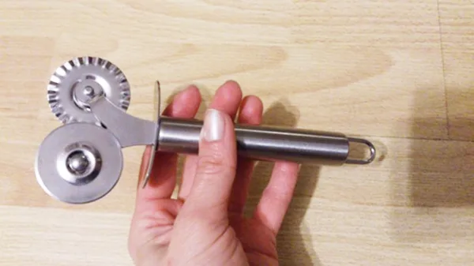
- Нож. Для работы лучше всего использовать нож для пиццы, им удобнее отрезать лишние края массы. Однако если в хозяйстве такой нож отсутствует – не беда, всегда можно обойтись обычным кухонным ножом.

- Утюжок для разглаживания поверхности мастики. Этот инструмент очень удобен. Если для декора кондитерского изделия необходим четкий и ровный угол на кромке, понадобятся два утюжка.
Следует знать!
Утюжок для разглаживания мастики в первое время можно заменить обычной полиэтиленовой крышкой.
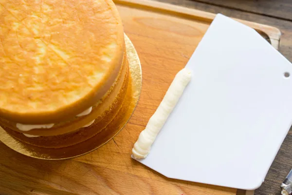
Лопатка или шпатель для выравнивания основы торта.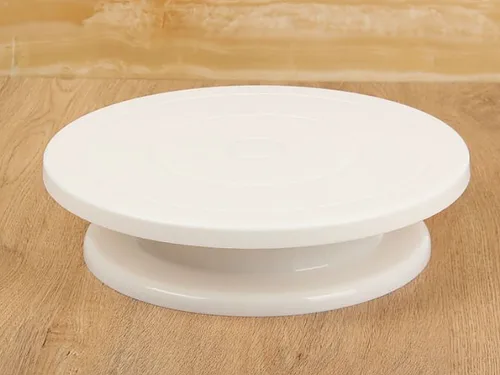
- Подставка для торта. Идеальный вариант – это вращающаяся подставка. Именно с ее помощью получится сделать ровную и гладкую поверхность.
Материалы для обтяжки торта
Теперь необходимо определиться с тем, какие материалы понадобятся для украшения:
- Мастика из маршмеллоу. Ее можно приготовить самостоятельно. Чтобы она лучше настоялась, приготовьте ее заранее, заверните в пищевую пленку и положите на несколько часов в холодильник.
- Крахмал или сахарная пудра – они необходимы для того, чтобы облегчить раскатку мастики.
- Торт – самый важный элемент для работы. Испеките его накануне по выбранному рецепту.
Стоит знать!
Для обтяжки не подойдет мягкий или влажный торт, с поверхностью из суфле или обильно смазанный белковым кремом.
- Крем под мастику. Его приготовлением займитесь после того, как отправите мастику для настаивания в холодильник. Не используйте влажные крема, например на основе йогурта, сливок или сметаны. Под обтяжку подойдут только масляные, шоколадные или густые заварные крема, от которых мастика не потечет.
Как правильно обтянуть торт
Процесс украшения торта можно условно разделить на два этапа:
- Подготовка основы.
- Непосредственно обтяжка и украшение.
Если планируете украсить готовый десерт фигурками из мастики, займитесь их лепкой заранее и дайте им просохнуть.
Как подготовить торт к обтяжке
Важно правильно подготовить торт, так как это основное условие для того, чтобы получилось красивое изделие.
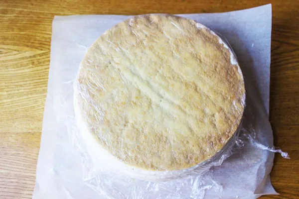
- Коржи приготовьте заблаговременно. Вначале соберите десерт и отправьте его на несколько часов в холодильник (лучше на ночь). Если он состоит из плотных промазанных коржей, поместите его под гнет.
- Достаньте, ровно обрежьте его края, придав им желаемую форму. Например, придайте изделию форму медведя, если ваш торт будет в виде этого животного.
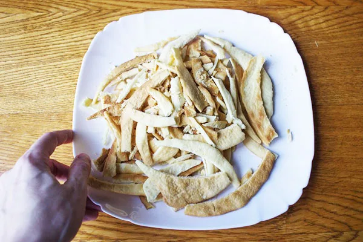
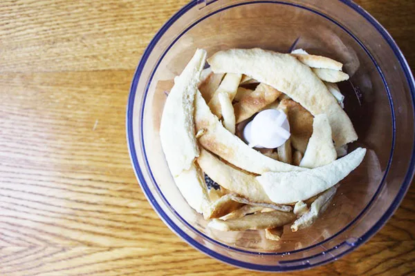
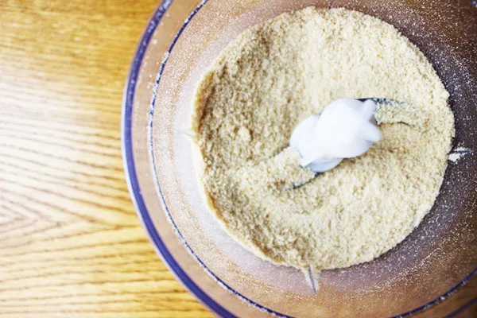
- Приготовьте крем под мастику. Его часть смешайте с измельченными в блендере или растолченными в ступке твердыми обрезками торта (если их нет, возьмите песочное печенье).
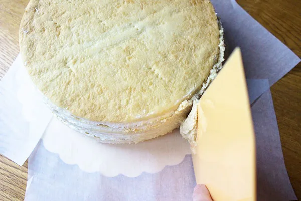
- Вращая десерт на подставке, смажьте всю его поверхность (бока и верх) тонким равномерным слоем крема без наполнителя и поставьте на 20-30 минут в холодильник, чтобы он немного затвердел. Это делается для того, чтобы оценить его гладкость, выявить глубокие ямки, неровности или бугры, требующие выравнивания.
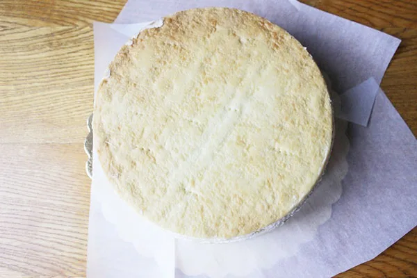
Совет!
Чтобы не запачкать подставку, подложите под торт пергамент.
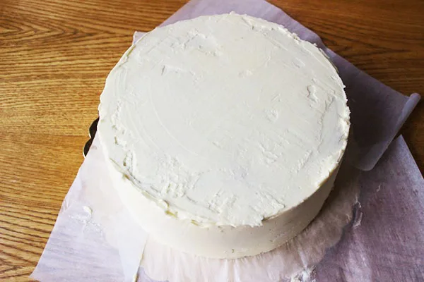
Кремом с наполнителем при помощи лопатки или шпателя выровняйте верх и бока торта, заделайте все ямки и впадины, уберите неровности. Снова уберите его в холодильник для затвердения.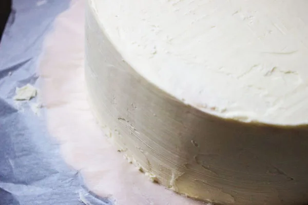
- Обдайте лопатку или шпатель горячей водой и оботрите насухо. Вращая подставку, теплым инструментом сгладьте все мелкие несовершенства.
Технология обтяжки торта
После того как подготовите основу, приступайте непосредственно к обтяжке.
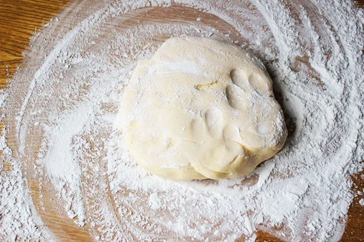
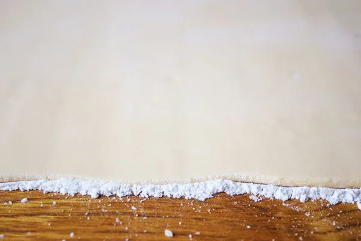
- Приготовленную мастику из маршмеллоу, предварительно окрашенную в нужный цвет и охлажденную в холодильнике, разомните руками и раскатайте скалкой в пласт толщиной около 2-3 мм. Чтобы мастика не липла к рабочей поверхности и скалке во время всех действий, посыпьте ее сахарной пудрой или крахмалом.
Важно!
Не делайте слишком тонкий пласт, так как он может порваться.
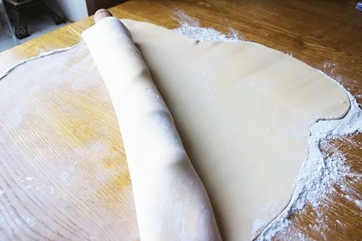
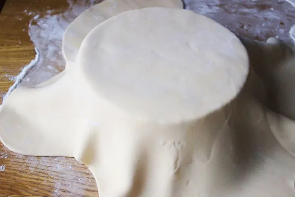
Раскатав мастику нужного размера с учетом боковых сторон торта и оставив небольшой припуск для удобства, накрутите пласт на скалку и перенесите на торт.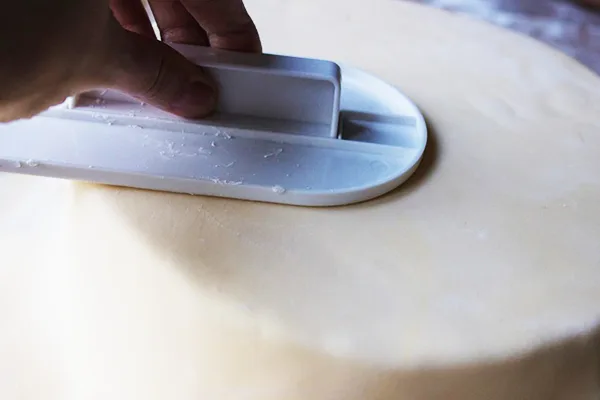
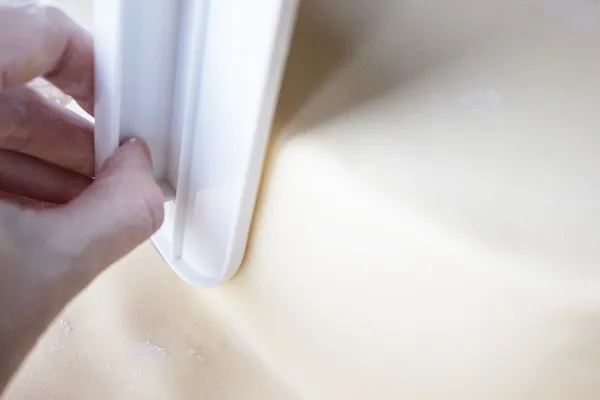
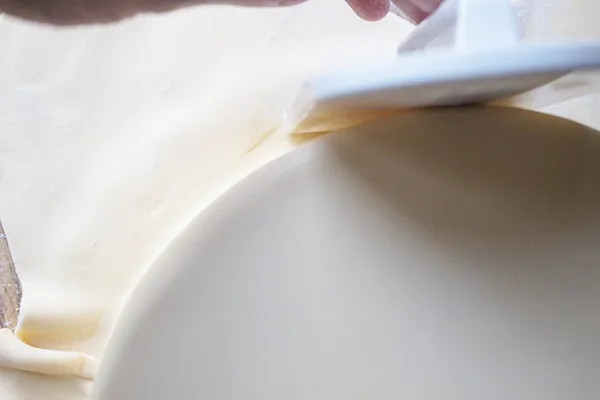
- Укройте кондитерское изделие получившимся слоем мастики, хорошенько разровняйте и расправьте. Утюжком разгладьте поверхность десерта. Если нужна острая кромка, сделайте ее двумя утюжками, соединяя их под прямым углом.
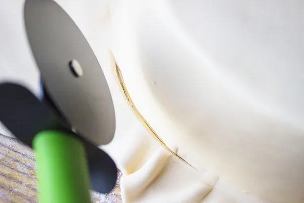
- Вращая подставку, отрежьте нижнюю кромку ножом для пиццы.
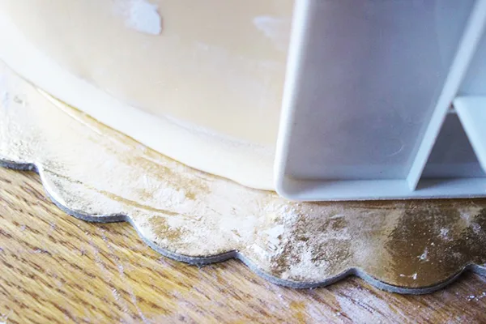
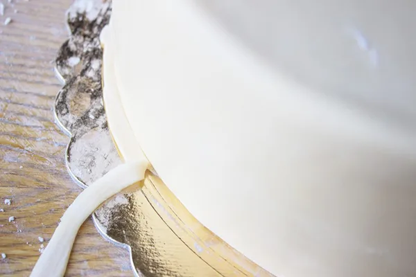
- Утюжком придавите нижнюю боковую кромку к подставке и снова отрежьте мастику, но уже впритык к торту.
Теперь десерт можно украсить фигурками, цветами или другими украшениями.